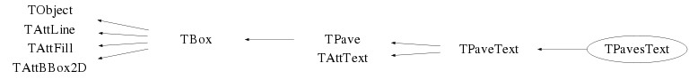

*/
*/
Function Members (Methods)
public:
| TPavesText() | |
| TPavesText(const TPavesText& pavestext) | |
| TPavesText(Double_t x1, Double_t y1, Double_t x2, Double_t y2, Int_t npaves = 5, Option_t* option = "br") | |
| virtual | ~TPavesText() |
| void | TObject::AbstractMethod(const char* method) const |
| virtual TBox* | TPaveText::AddBox(Double_t x1, Double_t y1, Double_t x2, Double_t y2) |
| virtual TLine* | TPaveText::AddLine(Double_t x1 = 0, Double_t y1 = 0, Double_t x2 = 0, Double_t y2 = 0) |
| virtual TText* | TPaveText::AddText(const char* label) |
| virtual TText* | TPaveText::AddText(Double_t x1, Double_t y1, const char* label) |
| virtual void | TObject::AppendPad(Option_t* option = "") |
| virtual void | TObject::Browse(TBrowser* b) |
| static TClass* | Class() |
| virtual const char* | TObject::ClassName() const |
| virtual void | TPaveText::Clear(Option_t* option = "")MENU |
| virtual TObject* | TObject::Clone(const char* newname = "") const |
| virtual Int_t | TObject::Compare(const TObject* obj) const |
| virtual void | TPave::ConvertNDCtoPad() |
| virtual void | TPave::Copy(TObject& pave) const |
| virtual void | TObject::Delete(Option_t* option = "")MENU |
| virtual void | TPaveText::DeleteText()MENU |
| Int_t | TAttLine::DistancetoLine(Int_t px, Int_t py, Double_t xp1, Double_t yp1, Double_t xp2, Double_t yp2) |
| virtual Int_t | TPave::DistancetoPrimitive(Int_t px, Int_t py) |
| virtual void | Draw(Option_t* option = "") |
| virtual TBox* | TBox::DrawBox(Double_t x1, Double_t y1, Double_t x2, Double_t y2) |
| virtual void | TObject::DrawClass() constMENU |
| virtual TObject* | TObject::DrawClone(Option_t* option = "") constMENU |
| virtual void | TPaveText::DrawFile(const char* filename, Option_t* option = "") |
| virtual void | TPave::DrawPave(Double_t x1, Double_t y1, Double_t x2, Double_t y2, Int_t bordersize = 4, Option_t* option = "br") |
| virtual void | TObject::Dump() constMENU |
| virtual void | TPaveText::EditText()MENU |
| virtual void | TObject::Error(const char* method, const char* msgfmt) const |
| virtual void | TObject::Execute(const char* method, const char* params, Int_t* error = 0) |
| virtual void | TObject::Execute(TMethod* method, TObjArray* params, Int_t* error = 0) |
| virtual void | TPave::ExecuteEvent(Int_t event, Int_t px, Int_t py) |
| virtual void | TObject::Fatal(const char* method, const char* msgfmt) const |
| virtual TObject* | TObject::FindObject(const char* name) const |
| virtual TObject* | TObject::FindObject(const TObject* obj) const |
| virtual Rectangle_t | TBox::GetBBox() |
| virtual TPoint | TBox::GetBBoxCenter() |
| Int_t | TPave::GetBorderSize() const |
| Double_t | TPave::GetCornerRadius() const |
| virtual Option_t* | TObject::GetDrawOption() const |
| static Long_t | TObject::GetDtorOnly() |
| virtual Color_t | TAttFill::GetFillColor() const |
| virtual Style_t | TAttFill::GetFillStyle() const |
| virtual const char* | TObject::GetIconName() const |
| const char* | TPaveText::GetLabel() const |
| virtual TText* | TPaveText::GetLine(Int_t number) const |
| virtual Color_t | TAttLine::GetLineColor() const |
| virtual Style_t | TAttLine::GetLineStyle() const |
| virtual Width_t | TAttLine::GetLineWidth() const |
| virtual TText* | TPaveText::GetLineWith(const char* text) const |
| virtual TList* | TPaveText::GetListOfLines() const |
| Float_t | TPaveText::GetMargin() const |
| virtual Option_t* | TPave::GetName() const |
| virtual Int_t | GetNpaves() |
| virtual TObject* | TPaveText::GetObject(Double_t& ymouse, Double_t& yobj) const |
| virtual char* | TObject::GetObjectInfo(Int_t px, Int_t py) const |
| static Bool_t | TObject::GetObjectStat() |
| virtual Option_t* | TPave::GetOption() const |
| Int_t | TPave::GetShadowColor() const |
| virtual Int_t | TPaveText::GetSize() const |
| virtual Short_t | TAttText::GetTextAlign() const |
| virtual Float_t | TAttText::GetTextAngle() const |
| virtual Color_t | TAttText::GetTextColor() const |
| virtual Font_t | TAttText::GetTextFont() const |
| virtual Float_t | TAttText::GetTextSize() const |
| virtual const char* | TObject::GetTitle() const |
| virtual UInt_t | TObject::GetUniqueID() const |
| Double_t | TBox::GetX1() const |
| Double_t | TPave::GetX1NDC() const |
| Double_t | TBox::GetX2() const |
| Double_t | TPave::GetX2NDC() const |
| Double_t | TBox::GetY1() const |
| Double_t | TPave::GetY1NDC() const |
| Double_t | TBox::GetY2() const |
| Double_t | TPave::GetY2NDC() const |
| virtual Bool_t | TObject::HandleTimer(TTimer* timer) |
| virtual ULong_t | TPave::Hash() const |
| virtual void | TBox::HideToolTip(Int_t event) |
| virtual void | TObject::Info(const char* method, const char* msgfmt) const |
| virtual Bool_t | TObject::InheritsFrom(const char* classname) const |
| virtual Bool_t | TObject::InheritsFrom(const TClass* cl) const |
| virtual void | TPaveText::InsertLine()MENU |
| virtual void | TPaveText::InsertText(const char* label)MENU |
| virtual void | TObject::Inspect() constMENU |
| void | TObject::InvertBit(UInt_t f) |
| virtual TClass* | IsA() const |
| Bool_t | TBox::IsBeingResized() const |
| virtual Bool_t | TObject::IsEqual(const TObject* obj) const |
| virtual Bool_t | TObject::IsFolder() const |
| virtual Int_t | TBox::IsInside(Double_t x, Double_t y) const |
| Bool_t | TObject::IsOnHeap() const |
| virtual Bool_t | TPave::IsSortable() const |
| virtual Bool_t | TAttFill::IsTransparent() const |
| Bool_t | TObject::IsZombie() const |
| virtual void | TPave::ls(Option_t* option = "") const |
| void | TObject::MayNotUse(const char* method) const |
| virtual void | TAttLine::Modify() |
| virtual Bool_t | TObject::Notify() |
| void | TObject::Obsolete(const char* method, const char* asOfVers, const char* removedFromVers) const |
| static void | TObject::operator delete(void* ptr) |
| static void | TObject::operator delete(void* ptr, void* vp) |
| static void | TObject::operator delete[](void* ptr) |
| static void | TObject::operator delete[](void* ptr, void* vp) |
| void* | TObject::operator new(size_t sz) |
| void* | TObject::operator new(size_t sz, void* vp) |
| void* | TObject::operator new[](size_t sz) |
| void* | TObject::operator new[](size_t sz, void* vp) |
| TPavesText& | operator=(const TPavesText&) |
| virtual void | Paint(Option_t* option = "") |
| virtual void | TBox::PaintBox(Double_t x1, Double_t y1, Double_t x2, Double_t y2, Option_t* option = "") |
| virtual void | TPave::PaintPave(Double_t x1, Double_t y1, Double_t x2, Double_t y2, Int_t bordersize = 4, Option_t* option = "br") |
| virtual void | TPave::PaintPaveArc(Double_t x1, Double_t y1, Double_t x2, Double_t y2, Int_t bordersize = 4, Option_t* option = "br") |
| virtual void | TPaveText::PaintPrimitives(Int_t mode) |
| virtual void | TObject::Pop() |
| virtual void | TPaveText::Print(Option_t* option = "") const |
| virtual Int_t | TObject::Read(const char* name) |
| virtual void | TPaveText::ReadFile(const char* filename, Option_t* option = "", Int_t nlines = 50, Int_t fromline = 0)MENU |
| virtual void | TObject::RecursiveRemove(TObject* obj) |
| virtual void | TAttFill::ResetAttFill(Option_t* option = "") |
| virtual void | TAttLine::ResetAttLine(Option_t* option = "") |
| virtual void | TAttText::ResetAttText(Option_t* toption = "") |
| void | TObject::ResetBit(UInt_t f) |
| virtual void | TObject::SaveAs(const char* filename = "", Option_t* option = "") constMENU |
| virtual void | TAttFill::SaveFillAttributes(basic_ostream<char,char_traits<char> >& out, const char* name, Int_t coldef = 1, Int_t stydef = 1001) |
| virtual void | TAttLine::SaveLineAttributes(basic_ostream<char,char_traits<char> >& out, const char* name, Int_t coldef = 1, Int_t stydef = 1, Int_t widdef = 1) |
| virtual void | TPaveText::SaveLines(ostream& out, const char* name) |
| virtual void | SavePrimitive(ostream& out, Option_t* option = "") |
| virtual void | TAttText::SaveTextAttributes(basic_ostream<char,char_traits<char> >& out, const char* name, Int_t alidef = 12, Float_t angdef = 0, Int_t coldef = 1, Int_t fondef = 61, Float_t sizdef = 1) |
| virtual void | TPaveText::SetAllWith(const char* text, Option_t* option, Double_t value)MENU |
| virtual void | TBox::SetBBoxCenter(const TPoint& p) |
| virtual void | TBox::SetBBoxCenterX(const Int_t x) |
| virtual void | TBox::SetBBoxCenterY(const Int_t y) |
| virtual void | TBox::SetBBoxX1(const Int_t x) |
| virtual void | TBox::SetBBoxX2(const Int_t x) |
| virtual void | TBox::SetBBoxY1(const Int_t y) |
| virtual void | TBox::SetBBoxY2(const Int_t y) |
| void | TObject::SetBit(UInt_t f) |
| void | TObject::SetBit(UInt_t f, Bool_t set) |
| virtual void | TPave::SetBorderSize(Int_t bordersize = 4)MENU |
| virtual void | TPave::SetCornerRadius(Double_t rad = 0.2)MENU |
| virtual void | TObject::SetDrawOption(Option_t* option = "")MENU |
| static void | TObject::SetDtorOnly(void* obj) |
| virtual void | TAttFill::SetFillAttributes()MENU |
| virtual void | TAttFill::SetFillColor(Color_t fcolor) |
| virtual void | TAttFill::SetFillColorAlpha(Color_t fcolor, Float_t falpha) |
| virtual void | TAttFill::SetFillStyle(Style_t fstyle) |
| virtual void | TPaveText::SetLabel(const char* label)MENU |
| virtual void | TAttLine::SetLineAttributes()MENU |
| virtual void | TAttLine::SetLineColor(Color_t lcolor) |
| virtual void | TAttLine::SetLineColorAlpha(Color_t lcolor, Float_t lalpha) |
| virtual void | TAttLine::SetLineStyle(Style_t lstyle) |
| virtual void | TAttLine::SetLineWidth(Width_t lwidth) |
| virtual void | TPaveText::SetMargin(Float_t margin = 0.05)MENU |
| virtual void | TPave::SetName(const char* name = "")MENU |
| virtual void | SetNpaves(Int_t npaves = 5)MENU |
| static void | TObject::SetObjectStat(Bool_t stat) |
| virtual void | TPave::SetOption(Option_t* option = "br") |
| virtual void | TPave::SetShadowColor(Int_t color)MENU |
| virtual void | TAttText::SetTextAlign(Short_t align = 11) |
| virtual void | TAttText::SetTextAngle(Float_t tangle = 0)MENU |
| virtual void | TAttText::SetTextAttributes()MENU |
| virtual void | TAttText::SetTextColor(Color_t tcolor = 1) |
| virtual void | TAttText::SetTextColorAlpha(Color_t tcolor, Float_t talpha) |
| virtual void | TAttText::SetTextFont(Font_t tfont = 62) |
| virtual void | TAttText::SetTextSize(Float_t tsize = 1) |
| virtual void | TAttText::SetTextSizePixels(Int_t npixels) |
| virtual void | TBox::SetToolTipText(const char* text, Long_t delayms = 1000) |
| virtual void | TObject::SetUniqueID(UInt_t uid) |
| virtual void | TPave::SetX1(Double_t x1) |
| virtual void | TPave::SetX1NDC(Double_t x1) |
| virtual void | TPave::SetX2(Double_t x2) |
| virtual void | TPave::SetX2NDC(Double_t x2) |
| virtual void | TPave::SetY1(Double_t y1) |
| virtual void | TPave::SetY1NDC(Double_t y1) |
| virtual void | TPave::SetY2(Double_t y2) |
| virtual void | TPave::SetY2NDC(Double_t y2) |
| virtual void | ShowMembers(TMemberInspector&) |
| virtual void | Streamer(TBuffer&) |
| void | StreamerNVirtual(TBuffer& ClassDef_StreamerNVirtual_b) |
| virtual void | TObject::SysError(const char* method, const char* msgfmt) const |
| Bool_t | TObject::TestBit(UInt_t f) const |
| Int_t | TObject::TestBits(UInt_t f) const |
| virtual void | TPaveText::UseCurrentStyle() |
| virtual void | TObject::Warning(const char* method, const char* msgfmt) const |
| virtual Int_t | TObject::Write(const char* name = 0, Int_t option = 0, Int_t bufsize = 0) |
| virtual Int_t | TObject::Write(const char* name = 0, Int_t option = 0, Int_t bufsize = 0) const |
protected:
| virtual void | TObject::DoError(int level, const char* location, const char* fmt, va_list va) const |
| void | TObject::MakeZombie() |
Data Members
public:
| enum TPave::[unnamed] { | kNameIsAction | |
| }; | ||
| enum TBox::[unnamed] { | kCannotMove | |
| }; | ||
| enum TObject::EStatusBits { | kCanDelete | |
| kMustCleanup | ||
| kObjInCanvas | ||
| kIsReferenced | ||
| kHasUUID | ||
| kCannotPick | ||
| kNoContextMenu | ||
| kInvalidObject | ||
| }; | ||
| enum TObject::[unnamed] { | kIsOnHeap | |
| kNotDeleted | ||
| kZombie | ||
| kBitMask | ||
| kSingleKey | ||
| kOverwrite | ||
| kWriteDelete | ||
| }; |
protected:
Class Charts



Function documentation
TPavesText(Double_t x1, Double_t y1, Double_t x2, Double_t y2, Int_t npaves = 5, Option_t* option = "br")
Pavestext normal constructor. The PavesText is by default defined bith bordersize=1 and option ="br". option = "T" Top frame option = "B" Bottom frame option = "R" Right frame option = "L" Left frame option = "NDC" x1,y1,x2,y2 are given in NDC option = "ARC" corners are rounded
void SavePrimitive(ostream& out, Option_t* option = "")
Save primitive as a C++ statement(s) on output stream out